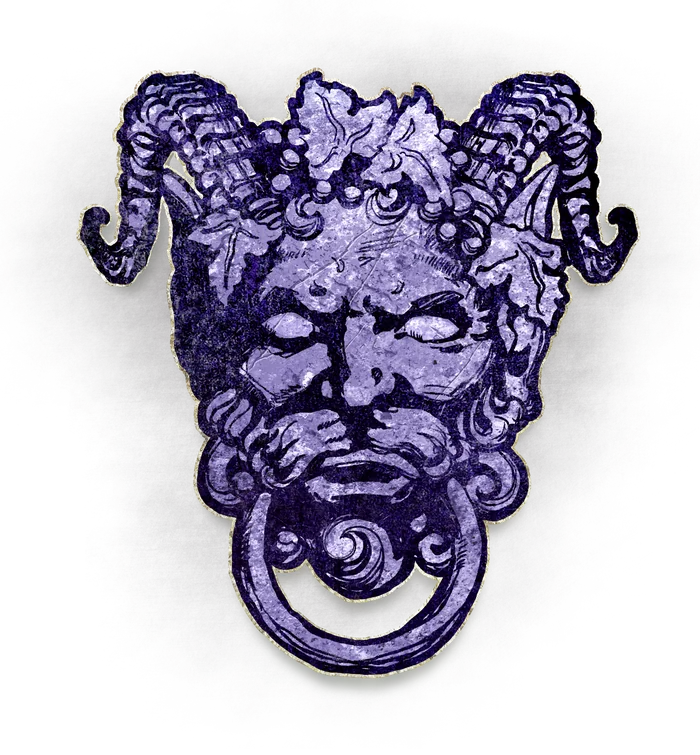
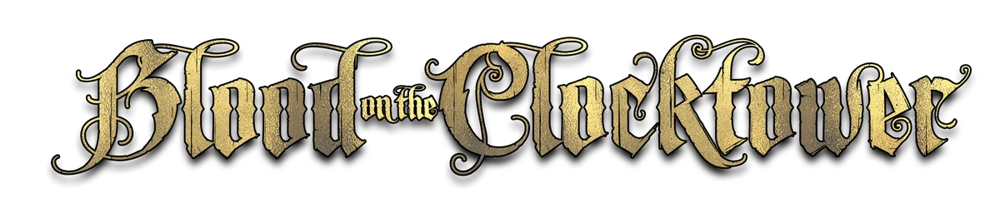

Fan-made apps for playing Blood on the Clocktower: round a real table, online, or over several days.
Add the players, deal their tokens to their phones (or pass yours round), then run the Grimoire, the nights and the days.
Open →Put the game on a TV: a QR code for everyone to join on their phones, then the town live from the Storyteller, never anyone's character.
Open →Your own Grimoire: who's sitting where, what they claim, who you trust, and what you've learnt.
Open →A notepad for the official online game: the players, your character, your night info, who claims what, and who died and how.
Open →For a player round a real table: your notes on claims, deaths and night info, and 👋 a big card to hold up when you want a word with someone.
Open →A game that runs over several days, on everyone's phone: private chats in the morning, nominations and secret votes in the afternoon, night actions in the evening.
Join a game → for the Storyteller
for the Storyteller
Set up a Clocktower Daily game, work through each night with the info drafted for you, and confirm each day's execution.
Open → for the host
for the host
A different game of murder and suspicion over several days: Shadows hide amongst the Guests, murder one each night, and everyone votes at the round table to banish someone.
Open →